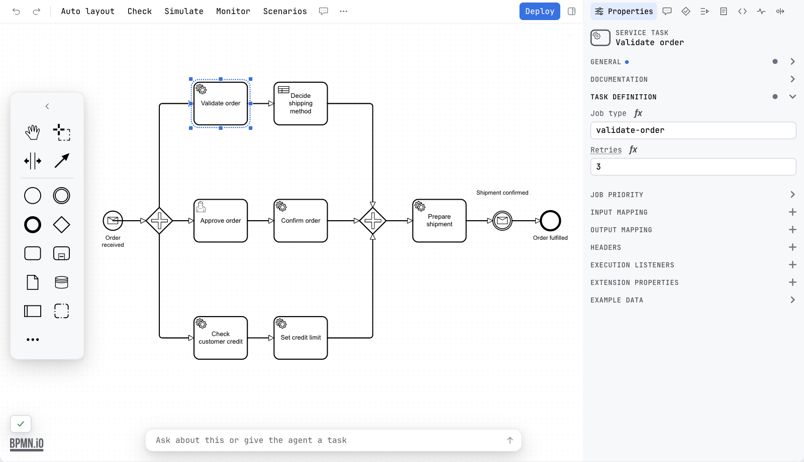
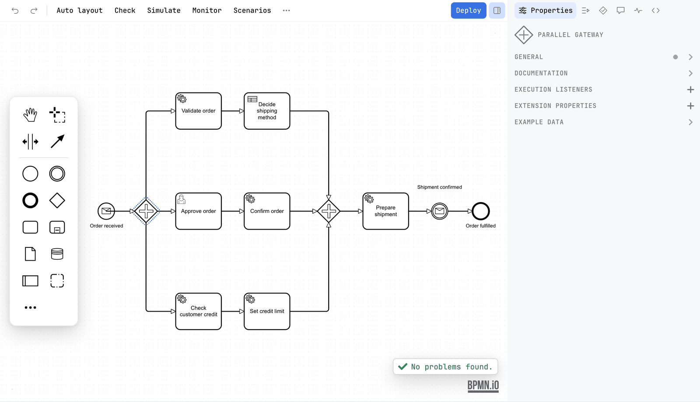
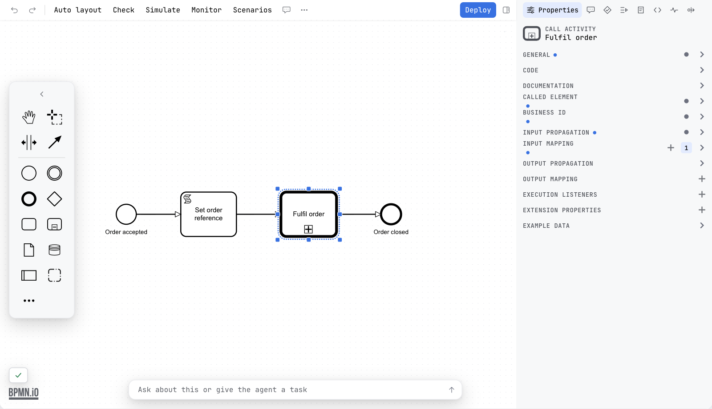

Guide / Draw and edit
The properties panel
The Properties tab of the sidebar shows the settings of the selected element, and every change you make there goes into the diagram.
Use it
- Click an element on the canvas. The Properties tab of the sidebar shows its settings. Click the empty canvas to see the settings of the process itself.
- Open a group by clicking its title. A group holds settings that belong together.
- Change a value. It is written to the diagram as you type.
- To put the panel away, press the sidebar toggle at the right end of the toolbar. Press it again to bring the whole sidebar back.

The panel is the same one bpmn.io's properties panel draws, with the groups the engine profile defines. The other tabs beside it are Scenarios, Problems, Comments, Monitor and Code. Comments are not a group of this panel: they have the tab of their own. The sidebar covers the surface they all sit in.
Which groups you see
The groups depend on two things: what the element is, and which engine the diagram is for. A service task has different groups from a gateway. A Camunda 8 service task has different groups from a Camunda 7 one.


| Engine | What the panel offers |
|---|---|
| Classic BPMN | The groups BPMN itself defines: General, Documentation, and the ones for the element, such as Message, Signal, Error, Escalation, Link, Timer, Compensation, Multi-instance and Ad-hoc completion. Also Inputs and Outputs, written the BPMN way. See Engines. |
| Camunda 7, Operaton, CIB seven | The BPMN groups plus the execution groups of Camunda 7: Script, Condition, Execution listeners, Task listeners, Inputs and Outputs, and more. |
| Flowable, Activiti | The BPMN groups plus the attributes the two engines share: async, exclusive, skip expression, assignee, candidate users and groups, due date, priority, form key, class, expression, delegate expression, result variable and the call activity ones. Form properties, task and execution listeners, fields and event listeners are read and written. Expressions are JUEL, ${...}. See Engines. |
| Camunda 8 | The BPMN groups plus the Zeebe groups: for example the task definition, input and output mappings, and the form. A field can be a FEEL expression. |
Show or hide it
The panel is the first tab of the sidebar, so it is shown and hidden with the sidebar rather than on its own. The sidebar is about a third of the width of the editor, between 320 and 480 pixels, and the dividing line can be dragged from 280 pixels to half the editor. Below about 960 pixels of editor width it becomes a drawer over the canvas. The width and the tab you left are kept in ~/.penstock/preferences.json. See The sidebar.
Scripts and conditions
On Camunda 7, Operaton and CIB seven, a field that holds a script is a small code editor with colours. Groovy is coloured as Groovy, all else as JavaScript. Under the field there is a button Edit in new tab that opens the script in a code editor of your tool. See Scripts in their own tab.

Try an expression on a running instance
A field that holds an expression, such as a gateway condition or a mapping, has Try on instance. Pick an instance in the Monitor tab first, and the expression is run against that instance's variables. The result, or the engine's own complaint, lands under the field. Without an instance the field says Pick an instance in the Monitor tab to run this on its variables. Camunda 8.9 or newer evaluates it. On Camunda 7 the field says Camunda 7 cannot evaluate an expression. It needs Camunda 8.9 or newer. Nothing is written on the engine. See Monitor.
Example data of a worker step
The Example data group is the one Camunda Modeler has. On a step that a worker runs, Penstock fills it from what it knows: the variables that reach the step, and the ones the worker's code reads, with the types the code gives them. Write example output writes that into the step, where Camunda Modeler reads example data back from, and the panel says Example output written. When nothing reaches the step, it says Nothing reaches this step, so there is no example output to write. See Code links.
Templates
If the project has element templates, a selected task can be set from a template. The panel then shows only the fields that the template exposes. See Element templates.
Inputs and outputs in the Classic profile
Select a task, a sub-process or the process itself. The panel shows an Inputs and an Outputs group. Add an entry and Penstock writes a bpmn:ioSpecification with a bpmn:dataInput or bpmn:dataOutput, and the sets that refer to them:
<bpmn:serviceTask id="Task_check" name="Check stock">
<bpmn:ioSpecification>
<bpmn:dataInput id="DataInput_1" name="quantity" />
<bpmn:inputSet id="InputSet_1" name="Inputs">
<bpmn:dataInputRefs>DataInput_1</bpmn:dataInputRefs>
</bpmn:inputSet>
<bpmn:outputSet id="OutputSet_1" name="Outputs" />
</bpmn:ioSpecification>
</bpmn:serviceTask>
Remove the last input and the last output and the whole specification goes with them, so a file never has an empty one. Camunda 7 and Camunda 8 keep their own input and output editors, because those write camunda:inputOutput and zeebe:ioMapping, which is what those engines read.
What you see
- Groups for the selected element, in the first tab of the sidebar. A group with entries shows a dot or a count.
- Every value you change is written to the diagram as you type.
Common problems
- The panel does not show the group I expect.
- Check the engine. A Camunda 7 group does not exist in a Camunda 8 or Classic diagram. See Engines.
- The panel is missing.
- Press the sidebar toggle at the right of the toolbar, or the Sidebar action. See The sidebar.
- A script field is read-only.
- The script is open in a code editor of your tool. Type there, or close it. See Scripts in their own tab.
- I switched engine and the old groups are gone, but the attributes are still in the file.
- Penstock never rewrites a diagram when it opens. Content the new engine does not know stays in the file, and the panel has no place to show it.